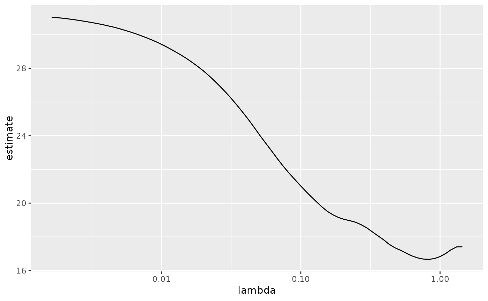
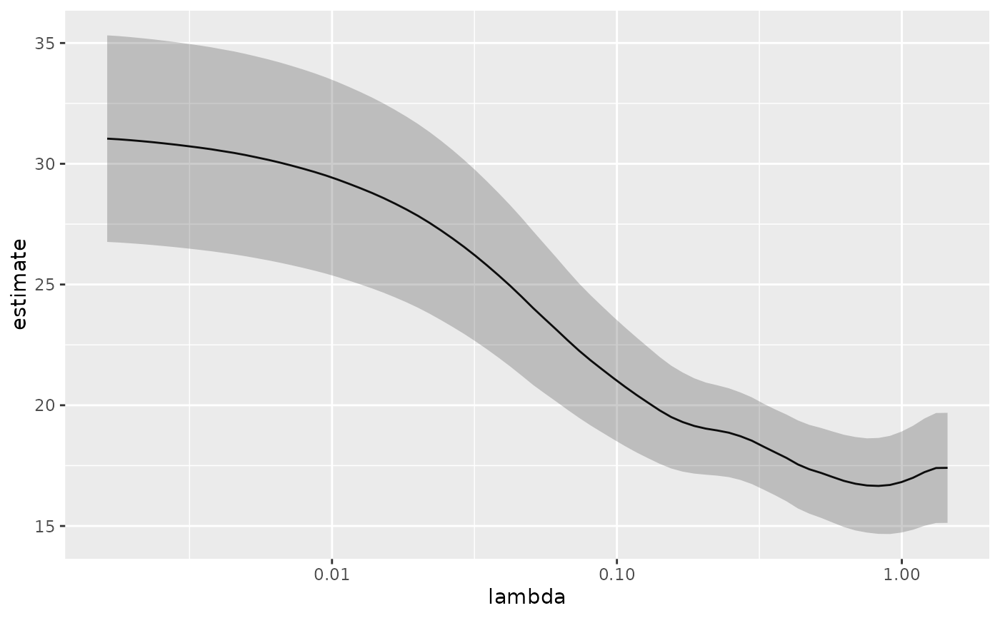
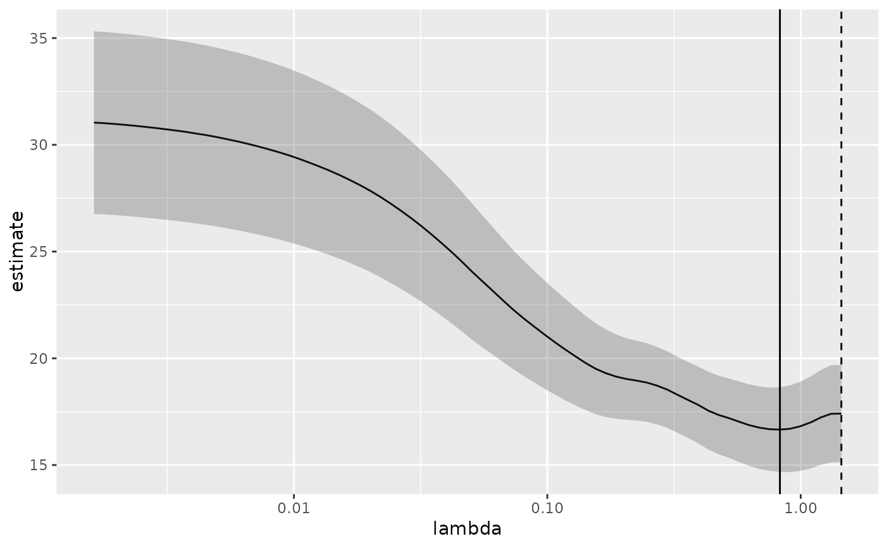
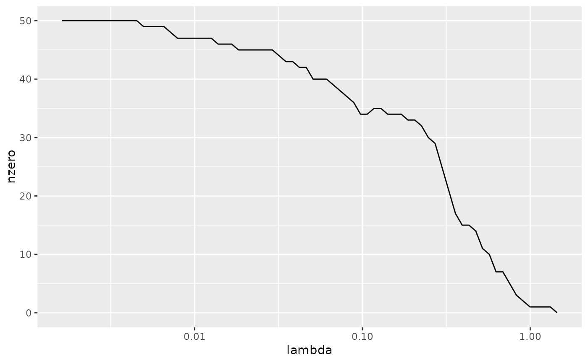
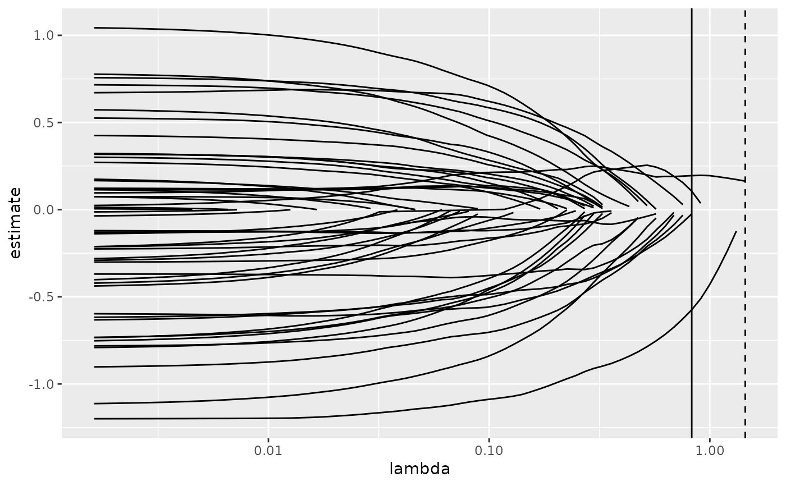

Tidy summarizes information about the components of a model. A model component might be a single term in a regression, a single hypothesis, a cluster, or a class. Exactly what tidy considers to be a model component varies across models but is usually self-evident. If a model has several distinct types of components, you will need to specify which components to return.
Usage
# S3 method for class 'cv.glmnet'
tidy(x, ...)Arguments
- x
A
cv.glmnetobject returned fromglmnet::cv.glmnet().- ...
Additional arguments. Not used. Needed to match generic signature only. Cautionary note: Misspelled arguments will be absorbed in
..., where they will be ignored. If the misspelled argument has a default value, the default value will be used. For example, if you passconf.lvel = 0.9, all computation will proceed usingconf.level = 0.95. Two exceptions here are:
See also
Other glmnet tidiers:
glance.cv.glmnet(),
glance.glmnet(),
tidy.glmnet()
Value
A tibble::tibble() with columns:
- lambda
Value of penalty parameter lambda.
- nzero
Number of non-zero coefficients for the given lambda.
- std.error
The standard error of the regression term.
- conf.low
lower bound on confidence interval for cross-validation estimated loss.
- conf.high
upper bound on confidence interval for cross-validation estimated loss.
- estimate
Median loss across all cross-validation folds for a given lamdba
Examples
# load libraries for models and data
library(glmnet)
set.seed(27)
nobs <- 100
nvar <- 50
real <- 5
x <- matrix(rnorm(nobs * nvar), nobs, nvar)
beta <- c(rnorm(real, 0, 1), rep(0, nvar - real))
y <- c(t(beta) %*% t(x)) + rnorm(nvar, sd = 3)
cvfit1 <- cv.glmnet(x, y)
tidy(cvfit1)
#> # A tibble: 74 × 6
#> lambda estimate std.error conf.low conf.high nzero
#> <dbl> <dbl> <dbl> <dbl> <dbl> <int>
#> 1 1.45 17.4 2.28 15.1 19.7 0
#> 2 1.32 17.4 2.28 15.1 19.7 1
#> 3 1.20 17.2 2.22 15.0 19.5 1
#> 4 1.09 17.0 2.15 14.8 19.1 1
#> 5 0.997 16.8 2.09 14.7 18.9 1
#> 6 0.909 16.7 2.03 14.7 18.7 2
#> 7 0.828 16.7 1.99 14.7 18.6 3
#> 8 0.754 16.7 1.95 14.7 18.6 5
#> 9 0.687 16.8 1.93 14.8 18.7 7
#> 10 0.626 16.9 1.91 15.0 18.8 7
#> # ℹ 64 more rows
glance(cvfit1)
#> # A tibble: 1 × 3
#> lambda.min lambda.1se nobs
#> <dbl> <dbl> <int>
#> 1 0.828 1.45 100
library(ggplot2)
tidied_cv <- tidy(cvfit1)
glance_cv <- glance(cvfit1)
# plot of MSE as a function of lambda
g <- ggplot(tidied_cv, aes(lambda, estimate)) +
geom_line() +
scale_x_log10()
g

# plot of MSE as a function of lambda with confidence ribbon
g <- g + geom_ribbon(aes(ymin = conf.low, ymax = conf.high), alpha = .25)
g

# plot of MSE as a function of lambda with confidence ribbon and choices
# of minimum lambda marked
g <- g +
geom_vline(xintercept = glance_cv$lambda.min) +
geom_vline(xintercept = glance_cv$lambda.1se, lty = 2)
g

# plot of number of zeros for each choice of lambda
ggplot(tidied_cv, aes(lambda, nzero)) +
geom_line() +
scale_x_log10()

# coefficient plot with min lambda shown
tidied <- tidy(cvfit1$glmnet.fit)
ggplot(tidied, aes(lambda, estimate, group = term)) +
scale_x_log10() +
geom_line() +
geom_vline(xintercept = glance_cv$lambda.min) +
geom_vline(xintercept = glance_cv$lambda.1se, lty = 2)
